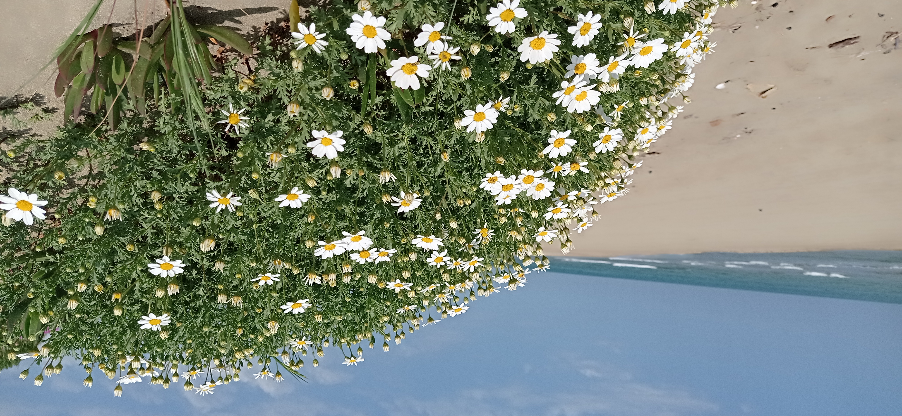

Daisies by the Sea
Tyrrhenian Coast · Spring 2024

Quiet Light
A place, a detail, a moment.
Future photo
Lines & Geometry
Urban details and visual balance.
La fotografia per me è un modo di osservare dettagli, luce e relazioni tra gli elementi — lo stesso approccio che porto nell’analisi dei dati.

Tyrrhenian Coast · Spring 2024
A place, a detail, a moment.
Urban details and visual balance.